SunitaASHA
Booked Arjun, 3 for Thu, 10–11 am. Fever more than 2 days, vomiting. No fast breathing.
Arogya Line · Service design · Concept
Overview
Set in villages near Jaipur: one record, shared by an ASHA app, a voice line any phone can call, and a PHC dashboard. Explore the prototype ↗
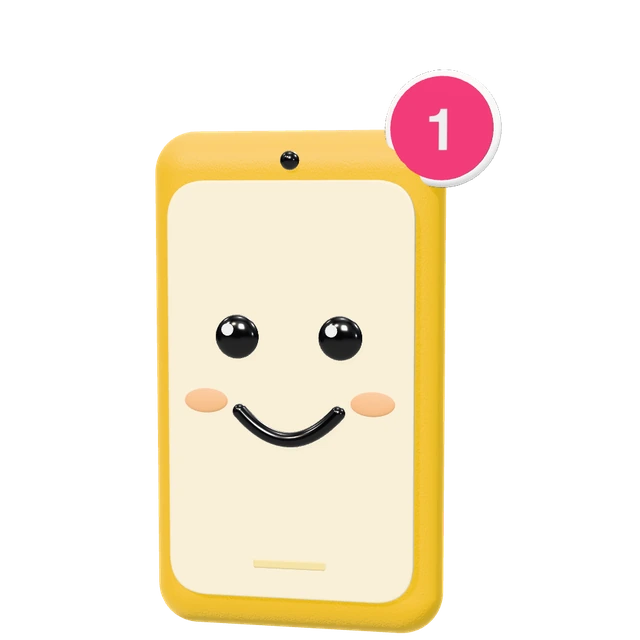
Checks and books, even offline
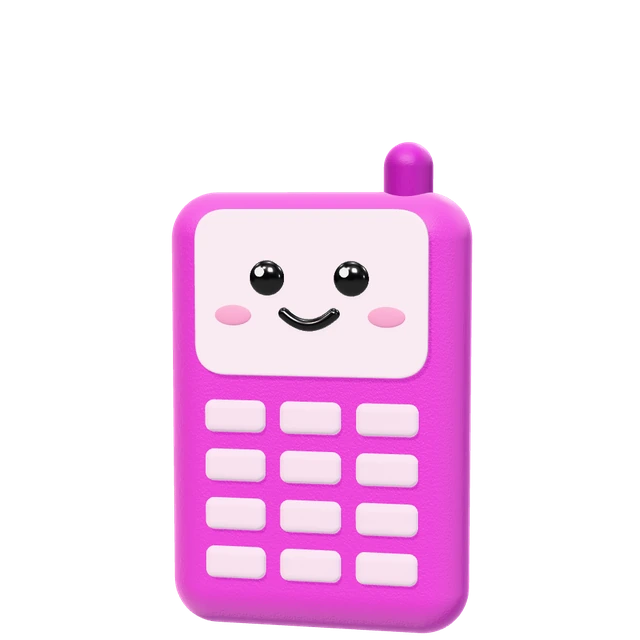
Advice by name, on any phone
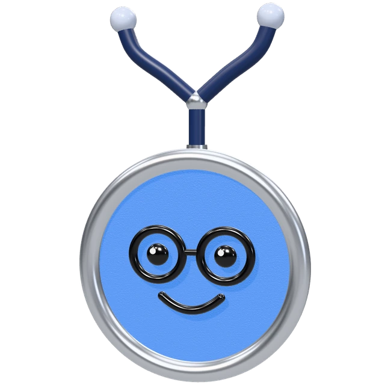
Starts from what was found
The problem
A concern starts at home, is checked by the ASHA and seen at the PHC: a different person, place and device at every step.
Where the record breaks
Familyat home
Arjun, 33 of 3
ASHAon her phone
Arjun, 32 of 3
PHCDr. Meena
Arjun, 31 of 3
Familyback home
Arjun, 30 of 3
What now?
How might I digitize rural healthcare?
How might I keep one patient’s care journey coherent as it moves between the family, the ASHA worker, and the PHC?
A community health worker, on foot, from house to house, often without signal.
A smartphone
At the primary health centre, seeing the day’s patients one after another.
A desktop
At home, often sharing one basic phone, caring for someone who is unwell.
Any phone, even a basic one
System
All three surfaces read and write the same record: a booking saved offline reaches the doctor when it syncs, and the doctor’s advice is what the family hears.
Saving never waits for it
Smartphone, any phone, desktop
Households, appointments, tonight
The system only suggests
Arjun should see the doctor
Book PHC visitCall the doctor lineOne primary action, at the thumb.
Arjun, 3Thu 1 Oct, 10–11 am
Offline · 1 visit to sendWhat’s waiting sits on the record itself.
The IMNCI colours, always with a word.
Booking → Doctor
Advice → Family
Follow-up → ASHA
Always handed to a named person.
A work queue, ranked by what is due, with the next action in words.
“1 visit to send” on her phone, on the doctor’s list the moment it syncs.
No app. Call, key in the family ID, hear the advice by name.
The day in time order; the consult opens on what the ASHA found.
Open the dashboardASHA app
Her phone is a work queue, not a dashboard. It answers one question: “Who needs me next?”
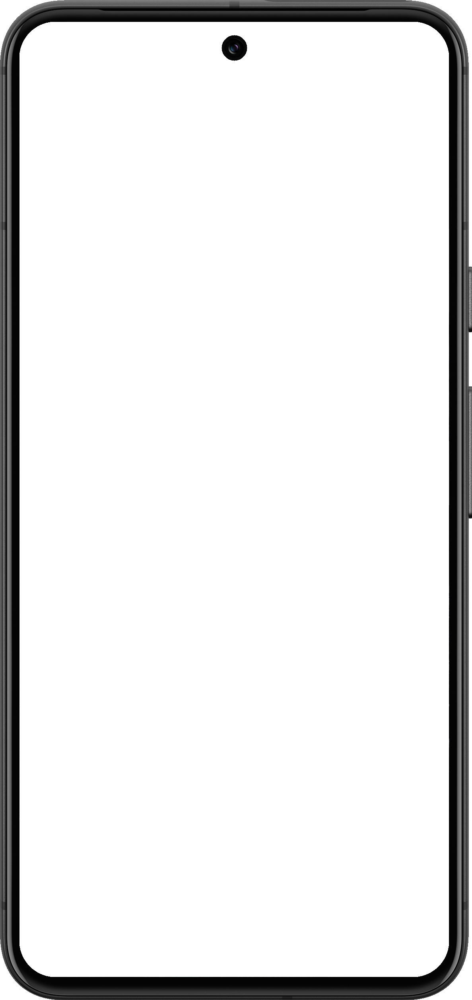
UrgencyThe IMNCI colour, always with a word
PersonKhushi, not the household head
Next actionWhat to do and when, in words
HouseholdWhich house, and who else needs her
I kept the assessment linear because the ASHA should spend her attention on the person, not on navigating the interface.
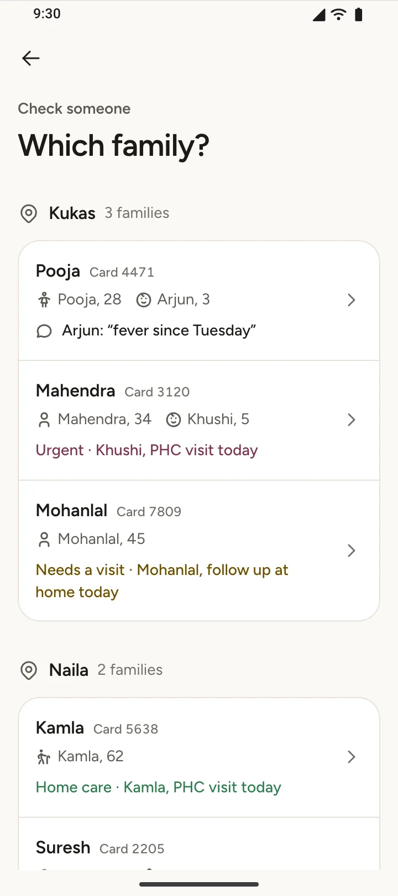
Check someone
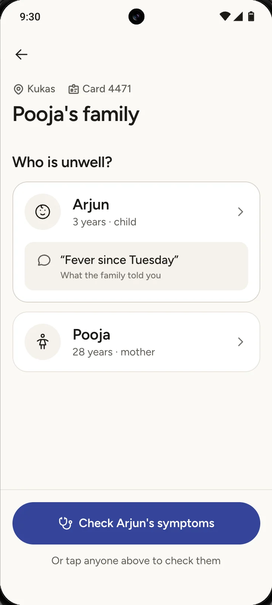
Select person
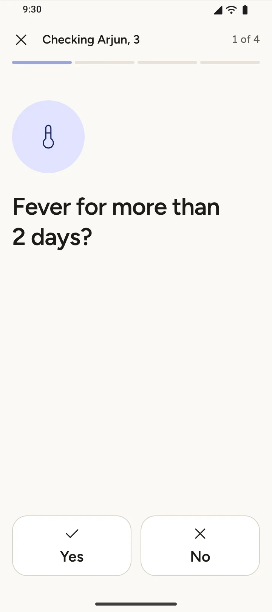
Ask questions
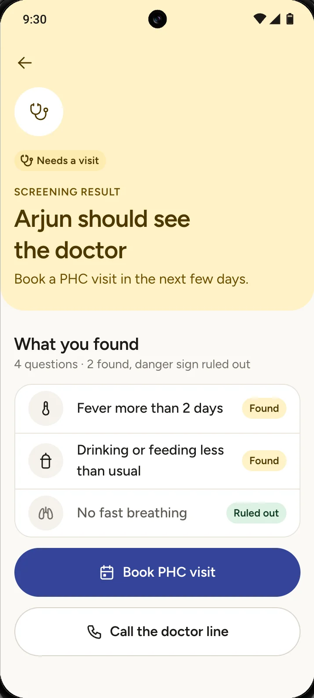
Result
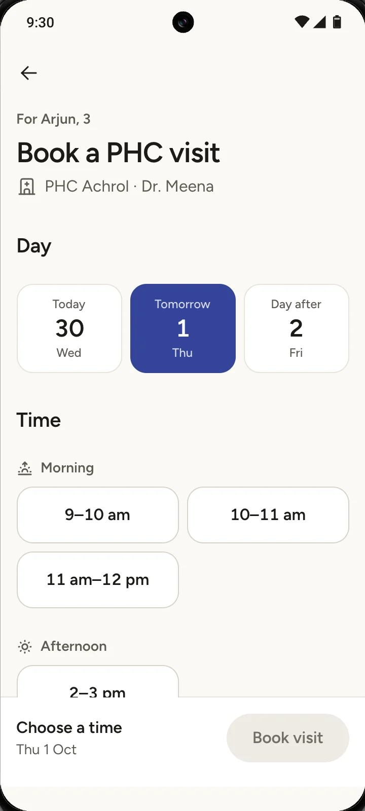
Action
The ASHA app and the voice line ask the same questions and reach the same result, because they share one piece of logic.
Fever for more than 2 days?
“Press 1 for yes, 2 for no, or 9 to hear the question again.”
Illustrative questions, not clinical guidance. A danger sign answered yes stops the check at once. Two other yeses mean a visit.
Which family, who is unwell, one question at a time, then the result with what was found and what was ruled out.
“Offline · 1 visit to send” while there is no signal, “Sending 1 visit…” when it returns, then sent to the PHC.
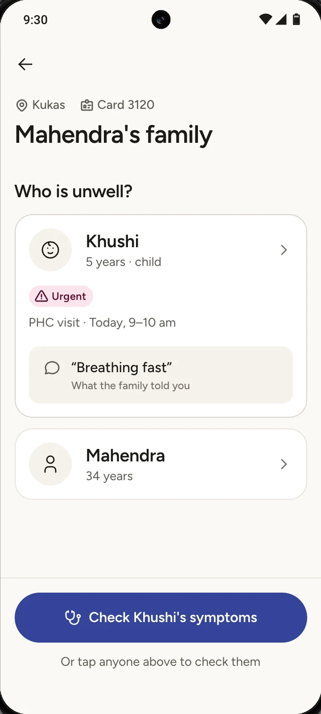
One row per person on Today. The family screen lists every open item, for each person.
Voice line
Any phone, the family ID from their printed card, and the person picked by name.
One idea per sentence
No clinical words
From anywhere in the call
“Result: amber.”
“Noted: fever more than 2 days; no chest pain.”
Written for a screen, then spoken.
“Thank you. From your answers, Arjun should see the doctor.”
“You told us about fever more than 2 days and vomiting more than 3 times today. You did not report fast breathing.”
The person, the action, then what was heard.
PHC dashboard
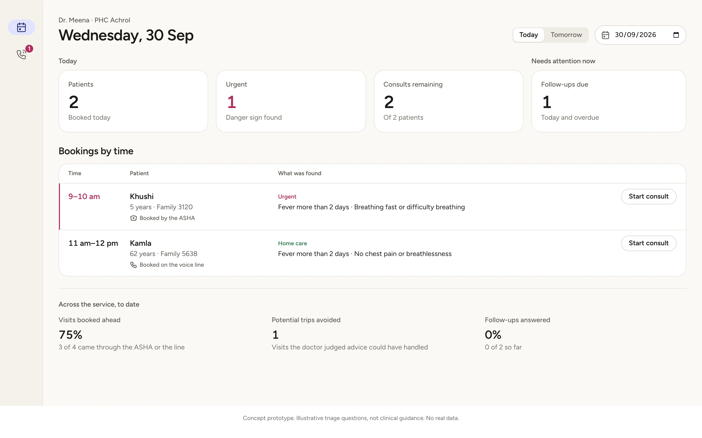
12345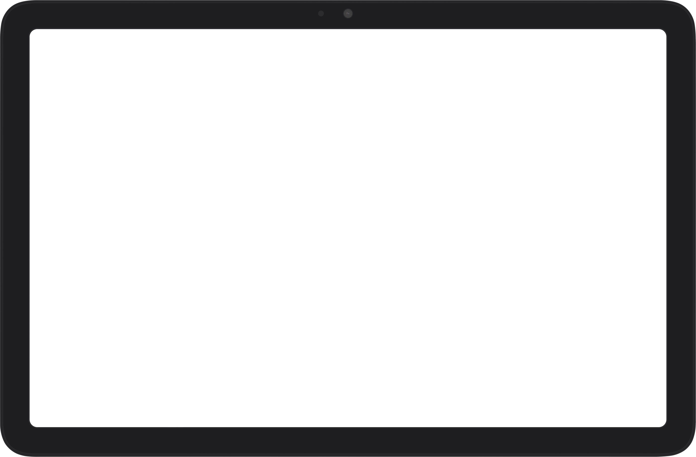
TimeThe order patients walk in
PatientWho, and how they came
UrgencyMarks a row, never reorders the day
StateOnly the action possible now
Next actionConsults left, follow-ups due
What was foundBefore the patient sits down
AdviceIn the words the family will hear
Without a visit?Asked only after seeing them
Follow-upNone, next day, 3 days, a week
Handoffs
Each handoff travels with what the next person needs to act.
Arjun’s record, as it moves through one run of the prototype. Each step is saved once, by the person who did it, and read by the next.
ASHAon her phone
PHCthe day’s list
Next action: see the patient. On the PHC day list, once synced.
PHCthe consult sheet
Familythe voice line
Next action: hear it. Menu 3 on the line, named for the person.
Familyany phone
ASHAher Today list
Next action: follow up. “Follow up · Called the voice line” on her list.
Edge cases
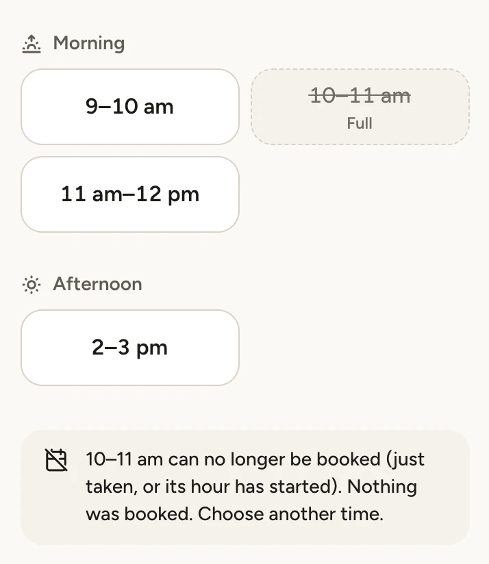
Problem. A booking syncing from another phone takes the slot she picked.
Design response. One rule for every surface. Nothing is booked, and she is told: “10–11 am was just taken. Nothing was booked.”
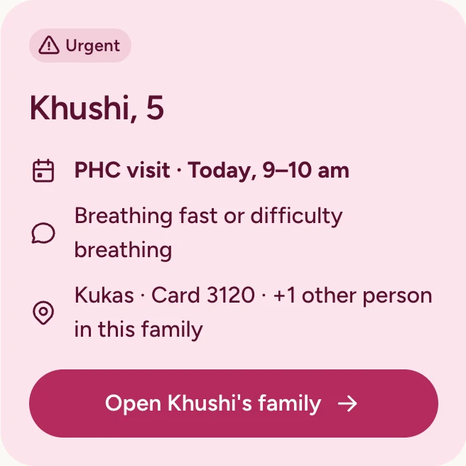
Problem. One row per family hid the second person who needed her.
Design response. One row per person, with “+1 other person in this family” on it.
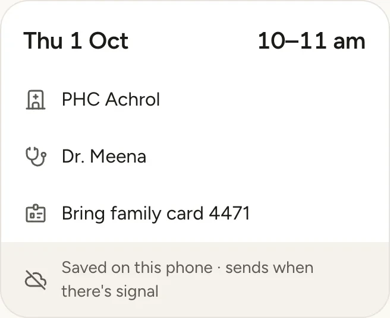
Problem. Without signal she can’t tell if her work was saved.
Design response. “Offline · 1 visit to send”, then “Sending 1 visit…”, then nothing. “Waiting to send” sits on the record itself.
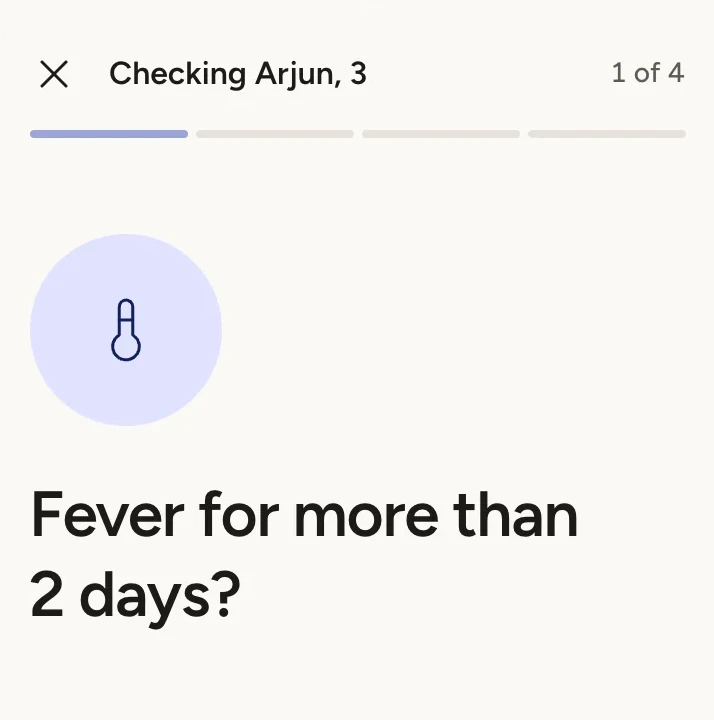
Problem. Opened from a link with no answers, the result said home care: false reassurance about a sick child.
Design response. An unfinished check is never a result. It goes back to the next unanswered question.
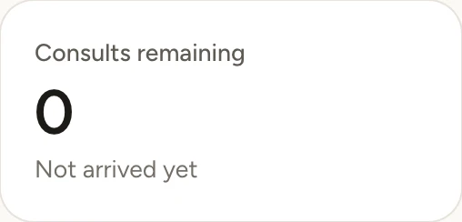
Problem. Tomorrow’s booking offered “Start consult”, before the patient was in the room.
Design response. “View booking” and “Not arrived yet”. The record refuses advice before arrival.
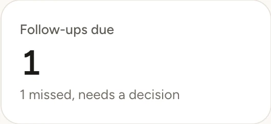
Problem. A missed call quietly became a home visit nobody had agreed to.
Design response. It waits under “Needs attention now” until the doctor decides: call again, or ask the ASHA.
Prototype
I translated the system into a working prototype so the handoffs could be experienced, not just represented in static screens. All three surfaces read and write one shared record in the browser.
Today, families, the one-question-at-a-time check, results, booking, and a simulated offline queue that sends when the signal returns.
A call written as live captions: family ID, person by name, the same screening, a read-back before booking, advice by person, and 0 for a person.
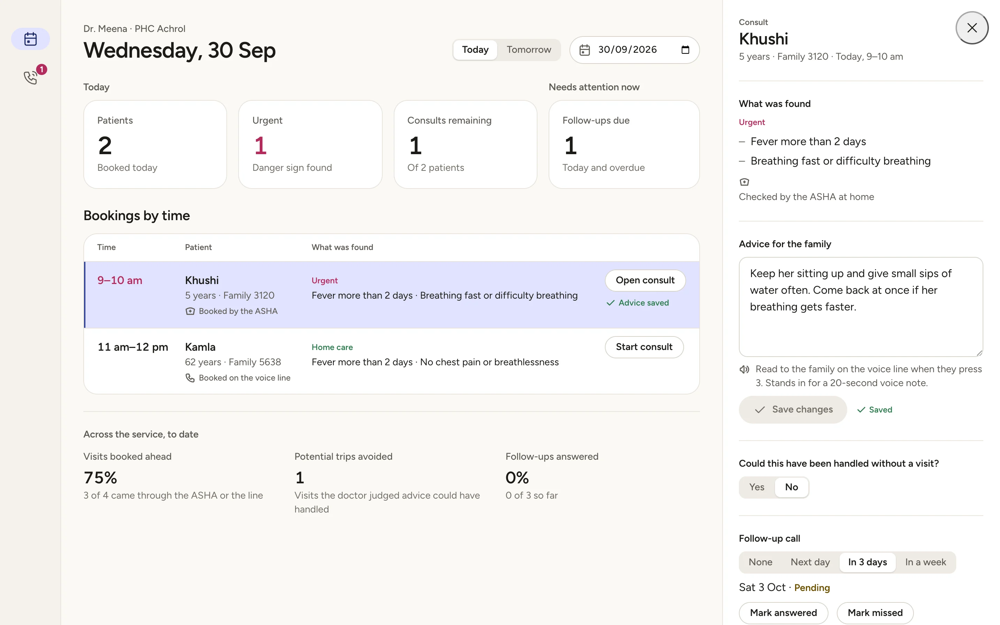
Khushi, 5 30
Khushi, 5 24
Khushi, 5 20
Khushi, 5 17
Khushi, 5 15
Khushi, 5 13
One family, so a Devanagari face can follow for Hindi.
4
8
12
16
24
32
48
Never colour alone.
A symptom as the body part.
How we’d know it works
0%
3 of 4 visits came through the ASHA or the line, not a walk-in.
0
1 visit the doctor judged advice could have handled.
0 of 2
Both calls are still due, so the doctor sees them under “Needs attention now”.
The prototype’s PHC dashboard counts all three; these are its demo numbers. A pilot would watch them week by week.
This is a prototype, not a production healthcare system. Clinical rules are illustrative, and production would require clinical validation, secure identity, real telephony, persistent offline storage, and approved healthcare infrastructure. All names, families and data are invented.
Looking back
Pressing 0 once booked a visit for the family head, a patient nobody had chosen. The fix wasn’t a better button: the person is chosen by name, the booking is read back, and 0 reaches a person without booking anything.
What’s next
One concern should never become three disconnected records.
Arogya Line explores what happens when care coordination is treated as a product problem, not just a collection of screens.
Explore the prototype ↗View the repository ↗